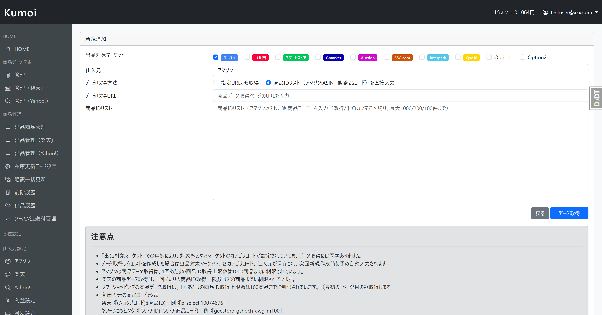
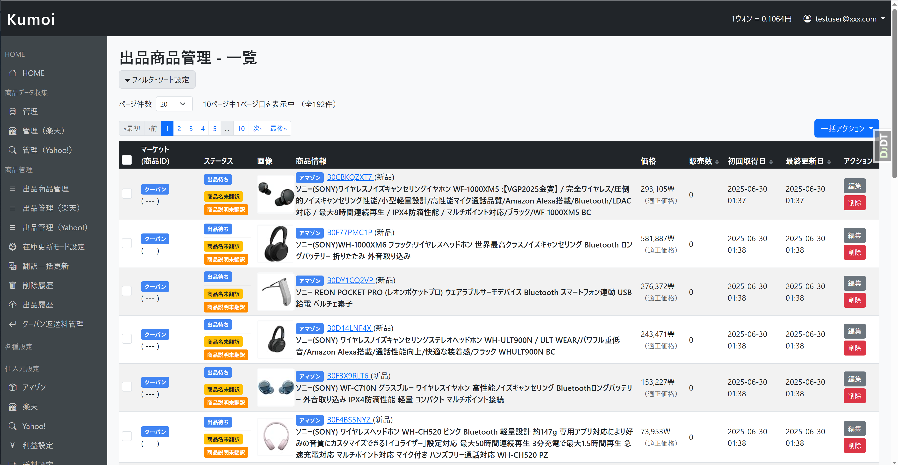

今お使いの韓国輸出ツールから乗り換え
日本の商品を韓国（Coupang）へ自動出品・自動在庫管理。
在庫反映の遅れ・赤字価格にお悩みなら、Kumoiへの乗り換えで解決します。
※ 今のツールを使い続けたまま、まずは無料でお試しいただけます
YOUR CURRENT TOOL
1つでも当てはまるなら、乗り換えを検討する価値があります。
在庫を反映させるために、毎日Excelを手作業でアップロードしている
在庫の反映が遅く、売り切れ商品が残ってキャンセル・ペナルティが発生する
価格計算が韓国の手数料・為替に最適化されておらず、気づいたら赤字になっている
機能のわりに月額が高い・出品NG対策などリスク管理機能が不十分
── これらは、Kumoiが特に力を入れて解決してきたポイントです。
BEFORE / AFTER
WHY KUMOI
韓国輸出ツールの多くは、在庫を反映させるために毎日Excelを手作業でアップロードする必要があります。在庫を自動で同期できるツールは限られ、しかもその多くは高額です。
「自動で在庫管理できて、しかも手頃」── これを両立しているのが Kumoi です。
| 手動型 手作業で運用 |
エクセル型 毎日アップロード |
自動管理型 自動・高額 |
Kumoi | |
|---|---|---|---|---|
| 在庫の反映 | ✕1件ずつ 手作業で更新 |
△毎日Excelを アップロード |
○自動同期 （数により最大7日） |
ほぼ毎日 自動更新 （作業ゼロ） |
| 韓国手数料・ 為替の価格計算 |
✕すべて手計算 |
△手計算が必要・ 赤字になりやすい |
○自動計算に対応 |
カテゴリ別手数料＋ 為替を自動反映 |
| 出品NG対策 | ✕自分で確認 |
△限定的 |
○対応 |
NGワード・NG ASINで 自動ブロック |
| 月額料金 | ¥無料〜安価 （ただし手間大） |
¥比較的安価 （毎日の手間大） |
✕高額 |
7,800円／月〜 初期費用無料 |
毎日のExcelアップロードから解放され、
高額ツール並みの自動化を、手頃な価格で。
※ 比較内容は一般的な韓国輸出ツールの傾向をもとにした当社の見解です。各ツールの仕様は提供元により異なります。
FEATURES
今のツールでできていたことは、Kumoiでもできます。さらに不満点が解消されます。
現在：Amazon → Coupang出品に対応
今後：楽天・Yahoo!ショッピング、11番街などへ拡張予定
Google翻訳に対応。商品データの翻訳作業から解放されます。
在庫の自動チェック・価格の定期更新・為替レートの定期確認。欠品やペナルティのリスクを抑えます。
カテゴリ別手数料 ＋ 為替レート定期確認 ＋ 利益設定を自動反映。「気づいたら赤字」を防ぎます。
お使いの配送業者の送料表を取り込み可能。正確な送料計算で利益を最適化します。
NGワード・NG ASIN登録で危険な商品を自動ブロック。全体共有・個別登録の両方に対応し、アカウントリスクを最小限に。
SCREENSHOTS

Amazonから商品データを効率的に収集

収集した商品データの管理と出品設定を一元化
DEVELOPER
実際にKumoiを使って韓国輸出事業を運営する開発者が、自ら開発し、日々改善しています。
HOW TO SWITCH
今のツールを止めずに、無料体験中に並行して試せます。
Amazon・CoupangのアカウントやAPI連携を設定。今お使いのツールはそのまま継続できます。
商品リスト・キーワードで一括登録。在庫同期・価格計算の精度を、ご自身の商品で確かめてください。
翻訳→在庫チェック→価格更新が自動で回ります。毎日のExcel作業から解放され、本格的に切り替えられます。
PRICING
14日間無料体験
初期費用無料
FAQ
乗り換えを検討する前に気になる点に、お答えします。
いいえ、必要ありません。今お使いのツールはそのまま動かしたまま、Kumoiを14日間の無料体験で並行してお試しいただけます。在庫同期や価格計算の精度をご自身の商品で確かめ、納得してから本格的に切り替えられます。
はい、問題ありません。画面はすべて日本語で、商品データの翻訳も自動翻訳機能が行います。韓国語の知識がなくても、出品から在庫管理まで日本語のまま運用できます。
Kumoiは商品リストやキーワードから一括で商品を登録・収集できるため、ゼロから手入力する必要はありません。Amazonの商品データを自動で収集して出品データを作成するので、乗り換え時の作業負担を抑えられます。
まずは14日間、無料でお試しいただけます。料金は月額7,800円（税込）・初期費用無料です。お試しの結果、合わないと感じた場合は本契約に進む必要はありません。
現在はAmazon（仕入れ元）→ Coupang（販売先）への自動出品に対応しています。今後、楽天・Yahoo!ショッピング・11番街などへの拡張を予定しています。
はい、自動です。在庫チェック・価格の定期更新・為替レートの定期確認が自動で回るため、毎日のExcelアップロードのような手作業は不要です。欠品やペナルティのリスクを抑えながら運用できます。
今のツールを続けたまま、リスクなくお試しいただけます。